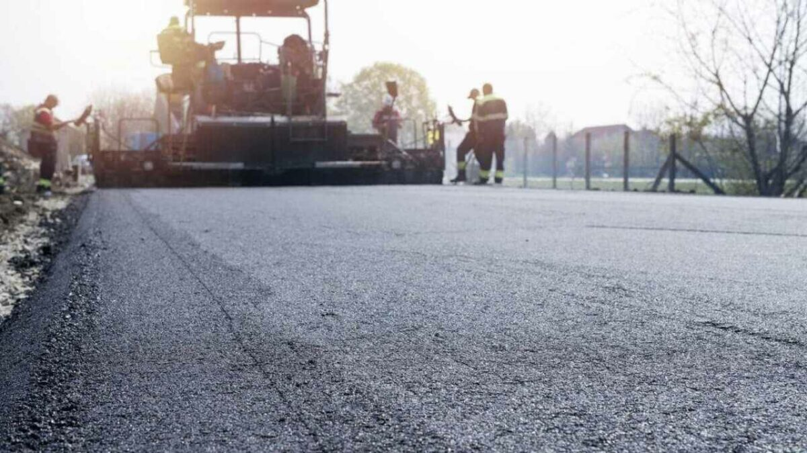
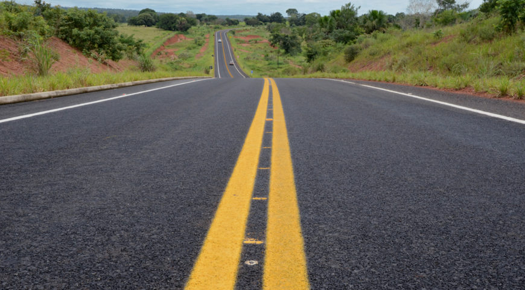
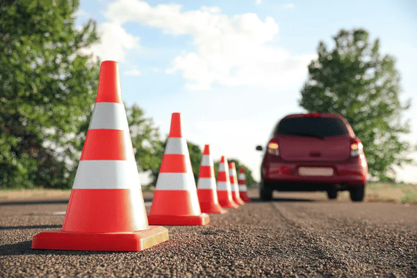

Objetivo do Projeto
O objetivo do projeto é desenvolver uma solução tecnológica para o problema da
falta de pavimentação nas ruas de Maceió. visto que, a falta de pavimentação adequada em
muitas ruas da cidade causa diversos problemas, como dificuldades de tráfego, acidentes,
prejuízos aos veículos e aos pedestres, além de afetar a qualidade de vida dos moradores.

A solução proposta pelo projeto é baseada em tecnologias modernas que permitam uma pavimentação
eficiente, durável, com menor custo e impacto ambiental. O projeto contempla o desenvolvimento
de um novo modo de pavimentação das vias superior ao utilizado atualmente.
PavAuto
O PavAuto é um caminhão de pavimentação autônomo que foi projetado para realizar o
trabalho de pavimentação sem a necessidade de operadores humanos. Com a ajuda de um sistema
centralizado, ele é capaz de receber informações sobre o local das obras e os detalhes da
pavimentação, incluindo relatórios das ruas não pavimentadas e solicitações feitas pelos
moradores.
O processo começa quando a prefeitura analisa os relatórios e solicitações, e aprova as obras de
pavimentação. Em seguida, a central dos veículos PavAuto é notificada, e um PavAuto disponível é
designado para a tarefa. O PavAuto então se desloca até o local das obras e começa a realizar a
pavimentação autonomamente, seguindo as especificações fornecidas pelo sistema centralizado.
O PavAuto é equipado com tecnologia avançada, como sensores, câmeras e sistemas de navegação, que
permitem que ele se mova com segurança e eficiência pelo local das obras. Ele é capaz de
realizar a pavimentação com alta precisão, garantindo um resultado de qualidade e duradouro.

Funcionalidades
O PavAuto é um caminhão de pavimentação autônomo com várias funções que o tornam uma
opção moderna e eficaz para obras de pavimentação. Ele possui recursos avançados para garantir a
segurança, a qualidade e a padronização do trabalho realizado. Algumas das funcionalidades do
PavAuto que o caracterizam como uma solução qualificada e efetiva contra o problema da falta de
pavimentação e a busca por um meio mais efetivo de realizala, são:

- Capacidade de montar sinalização temporária: o PavAuto é capaz de aplicar cones e placas
temporárias para sinalizar a região onde a obra está sendo realizada e alertar outros
veículos para tomar precauções e reduzir a velocidade ao passar pelo local. Isso ajuda a
aumentar a segurança do local das obras e minimiza o risco de acidentes.
- Sensores de detecção de obstáculos: o PavAuto é equipado com sensores de detecção de
obstáculos que minimizam o risco de colisões com outros veículos ou objetos no local das
obras. Isso ajuda a garantir a segurança do próprio PavAuto, bem como a segurança de outras
pessoas ou veículos que possam estar próximos ao local das obras.
- Capacidade de reconhecimento do nivelamento do asfalto: o PavAuto é capaz de reconhecer o
nivelamento do asfalto aplicado e ajustar a quantidade de material necessário para garantir
um resultado uniforme e de alta qualidade. Isso ajuda a evitar a necessidade de retrabalhos
e garante que a superfície pavimentada seja nivelada e uniforme.
- Padronização e trabalho constante: o PavAuto é projetado para realizar a pavimentação de
forma constante, seguindo um padrão predefinido. Isso ajuda a garantir um trabalho mais
rápido e uniforme, além de reduzir a necessidade de retrabalhos ou ajustes posteriores.
- Motor elétrico a baterias: o PavAuto funciona com baterias, o que o torna uma opção mais
sustentável em comparação com caminhões de pavimentação tradicionais que utilizam
combustíveis fósseis. As baterias podem ser facilmente e rapidamente recarregadas, o que
minimiza o tempo de parada do veículo e ajuda a manter a produtividade da equipe.
- Coleta de dados qualitativos: o PavAuto é capaz de captar e armazenar dados relacionados à
qualidade do trabalho realizado, como a espessura do asfalto aplicado e a taxa de
compactação. Esses dad
os podem ser utilizados para avaliar a qualidade do trabalho e identificar áreas que
precisam ser ajustadas ou melhoradas.
- Controle remoto: o PavAuto pode ser operado remotamente por um membro da equipe de operação
dos PavAutos. Isso permite que o operador controle o PavAuto a distância em casos de
necessidade, como manobras complexas ou problemas técnicos no caminhão.
Vantagens
O PavAuto é um projeto revolucionário na área de pavimentação, trazendo inúmeras
vantagens em relação aos caminhões de pavimentação tradicionais. Equipado com tecnologia de
ponta, o PavAuto é capaz de realizar a pavimentação de forma autônoma, seguindo as
especificações fornecidas pelo sistema centralizado.
Entre as principais vantagens do PavAuto, podemos citar sua capacidade de aplicar elementos de
sinalização temporária, como cones e placas, para alertar outros veículos e aumentar a segurança
no local das obras. Além disso, o PavAuto conta com sensores de detecção de obstáculos, que
minimizam o risco de colisões com outros veículos ou objetos no local das obras.
Outra grande vantagem do PavAuto é sua capacidade de reconhecer o nivelamento do asfalto
aplicado, ajustando a quantidade de material necessário para garantir um resultado uniforme e de
alta qualidade. Isso evita a necessidade de retrabalhos e garante uma superfície pavimentada
nivelada e uniforme.
O PavAuto também oferece uma padronização de trabalho constante, o que garante um trabalho mais
rápido e uniforme, além de reduzir a necessidade de retrabalhos ou ajustes posteriores. Além
disso, o PavAuto funciona com baterias, o que o torna uma opção mais sustentável em comparação
com caminhões de pavimentação tradicionais que utilizam combustíveis fósseis.
Por fim, o PavAuto é capaz de captar e armazenar dados relacionados à qualidade do trabalho
realizado, como a espessura do asfalto aplicado e a taxa de compactação. Esses dados podem ser
utilizados para avaliar a qualidade do trabalho e identificar áreas que precisam ser ajustadas
ou melhoradas. Com todas essas vantagens, é possível afirmar que o PavAuto representa um avanço
significativo na área de pavimentação, tornando o processo mais seguro, sustentável e eficiente.